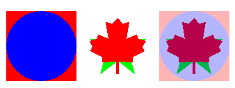

Pic.Blend (picID1, picID2, pct : int) : int
Pic.Blend is used to create a new picture by blending twoidentically sized pictures. The resulting picture is created bytaking pct % of the first picture and adding it to(100 - pct) % of the second picture.
Note that the blended picture is a newly created picture. When it is no longer needed, its memory should be released by using Pic.Free. Note that if pct is 100, then the resulting picture willbe identical to picID1. if pct is 0, then the resulting picture will be identical to picID2.
The program creates two identically sized pictures, blends themtogether and displays all three pictures. You can vary theblend percentage to obtain different results.

View.Set ("graphics:340;140,nobuttonbar")
% Create the original pictures
var pic1, pic2, picBlended : int
Draw.FillBox (0, 0, 100, 100, brightred)
Draw.FillOval (50, 50, 50, 50, brightblue)
pic1 := Pic.New (0, 0, 100, 100)
cls
Draw.FillStar (10, 10, 90, 90, brightgreen)
Draw.FillMapleLeaf(10, 10, 90, 90, brightred)
pic2 := Pic.New (0, 0, 100, 100)
cls
% Create new picture by blending 30% from pic1, 70% from pic2
picBlended := Pic.Blend (pic1, pic2, 30)
% Draw the three images
Pic.Draw (pic1, 10, 10, picCopy)
Pic.Draw (pic2, 120, 10, picCopy)
Pic.Draw (picBlended, 230, 10, picCopy)
Exported qualified. This means that you can only call the function by calling Pic.Blend, not by calling Blend.